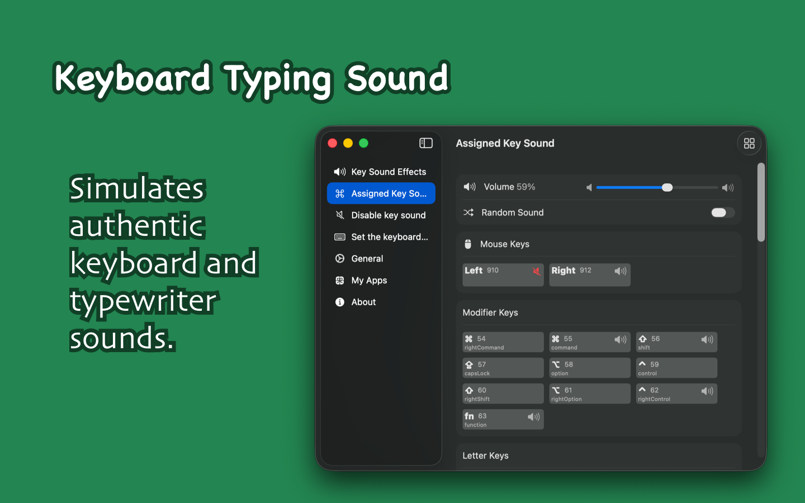
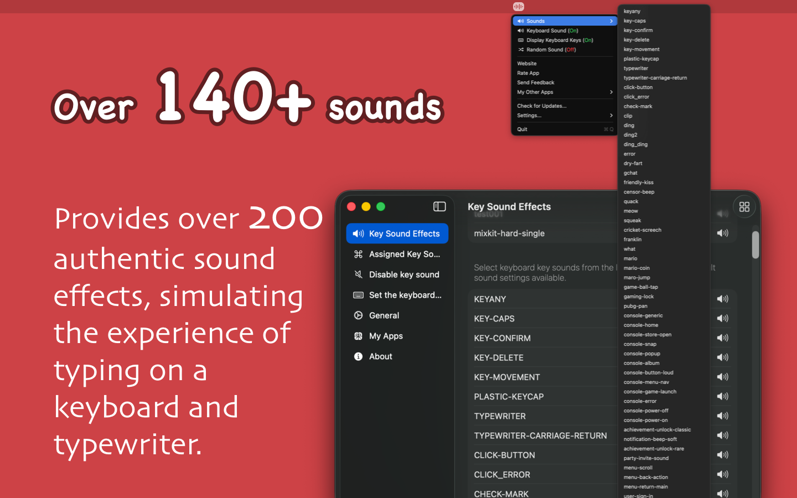
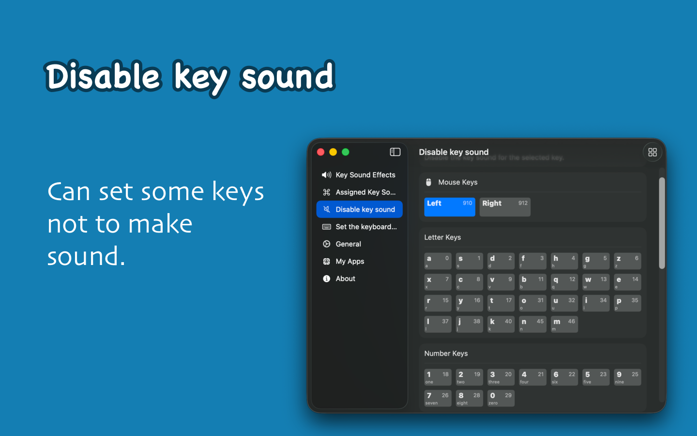

Minimum requirement: macOS 14.0; download from GitHub for the latest version.



KeyClicker brings a real keyboard typing sound experience to users, recreating the tactile feel of mechanical keyboards and typewriters. It also supports displaying the pressed shortcut keys on the desktop, making it ideal for meetings, teaching, or video tutorial creation.
For writers or typewriter enthusiasts, KeyClicker is the perfect choice. Many writers find that the sound of a typewriter helps them enhance focus and creativity. While the charm of physical typewriters is unique, they lack the convenience of modern devices, such as efficient editing and digital operations. With KeyClicker, you can enjoy the classic sound of a typewriter while retaining the powerful editing and publishing capabilities of macOS.
For programmers, KeyClicker also provides the ultimate mechanical keyboard typing experience, making each keystroke immersive and enhancing focus and enjoyment during programming!
If you hear two key sounds after setting the key sound, it may be because the system's default sound overlaps with the custom key sound. To solve this problem, you can go to System Settings -> Sound and turn off the two options: Play user interface sound effects and Play feedback when volume is changed, to avoid interference between the system sound and the custom sound.